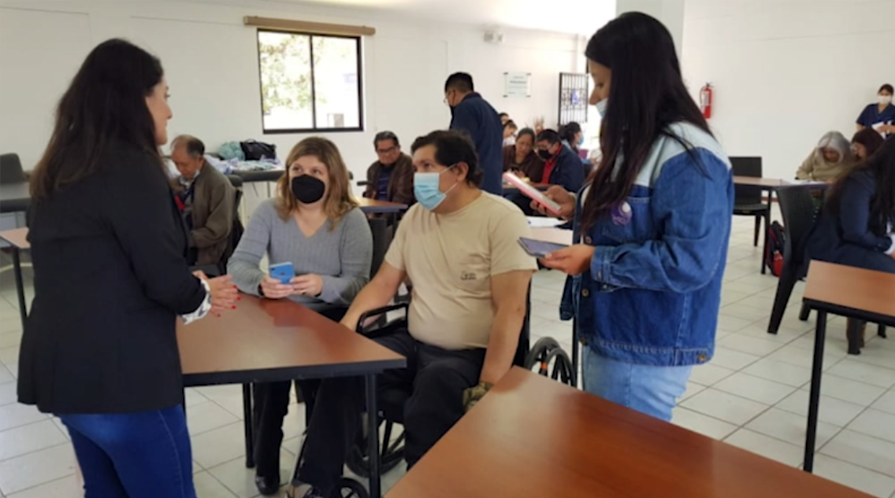
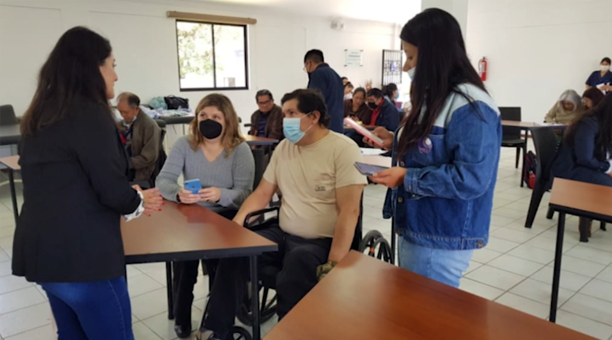

Acerca del Proyecto
InSCI Ecuador
InSCI - Es la primera encuesta internacional a la comunidad de lesionados medulares espinal (LME) aplicada en Ecuador en colaboración con el Centro Suizo para Paraplégicos (Swiss Paraplegic Research - SPF), en Nottwil, Suiza y la Pontificia Universidad Católica del Ecuador (PUCE). La Universidad Internacional del Ecuador (UIED) también participa como colaborador. El proyecto cuenta con financiamiento del Leading House for Latin America, con fondos del Gobierno Suizo.
InSCI forma parte del Sistema de Aprendizaje de Salud para la Lesión Medular (LHS-SCI). El LHS-SCI es un esfuerzo conjunto de la Sociedad Internacional de la Médula Espinal (ISCoS) y la Sociedad Internacional de Medicina Física y de Rehabilitación (ISPRM) para implementar las recomendaciones de las Perspectivas Internacionales sobre la Lesión Medular (IPSCI).
InSCI busca recolectar información sobre las condiciones de vida de las personas que viven con LME con el objetivo de identificar areas de intervención en los sistemas sociales y de salud. El diseño de InSCI se basa en la Clasificación Internacional del Funcionamiento, la Discapacidad y la Salud (ICF). La primera encuesta InSCI se realizó entre 2017 y 2018 contó con la participación de 22 países en las 6 regiones de la Organización Mundial de la Salud (OMS). Los países participantes fueron: USA, Noruega, Francia, Japón, Suiza, Alemania, Australia, Tailandia, Indonesia, España, Rumania, Polonia, Malasia, Grecia, Africa del Sur, Lituania, Italia, Corea del Sur, Brasil, China y Marruecos. La próxima encuesta internacional está prevista para 2022 y contará con la participación de mas de 30 países, entre ellos Ecuador.
Tanto el pilotaje, como la recolección de datos fueron posibles gracias a la colaboración activa de la Federación de personas con discapacidad física (FENEDIF) y la Fundación Hermano Miguel.
Schweizer Paraplegiker Forschung
PUCE
UIDE
Con la colaboración de:
FENEDIT
Fundación Hermano Miguel